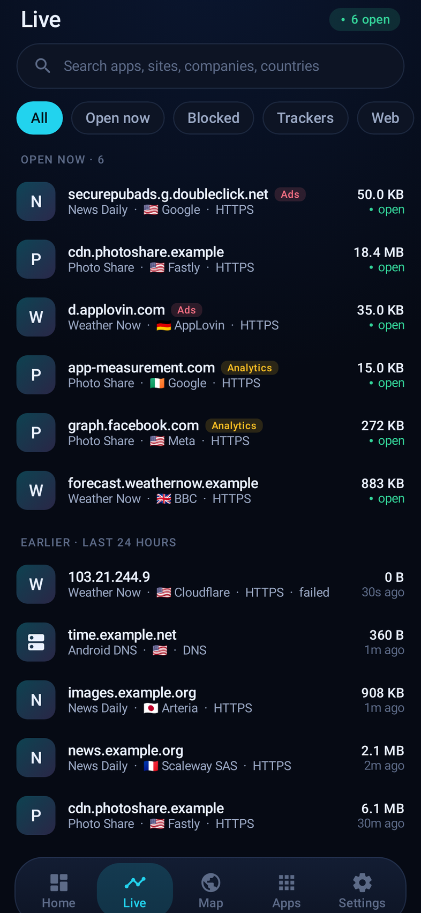
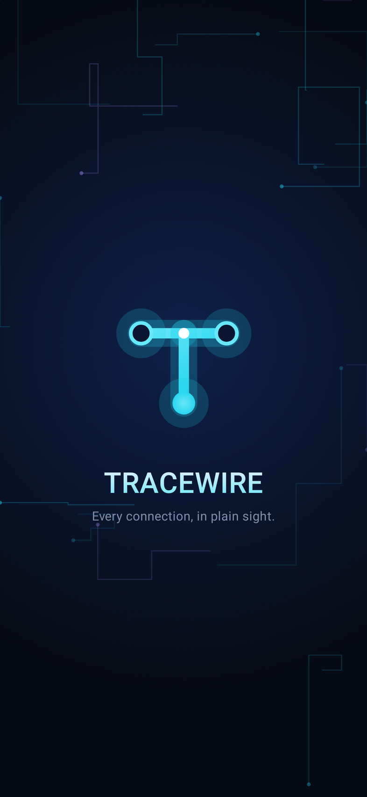
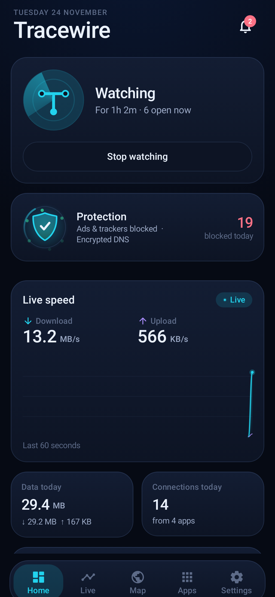
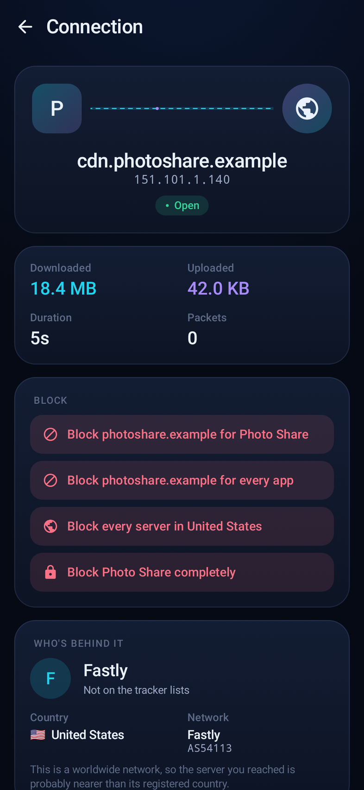
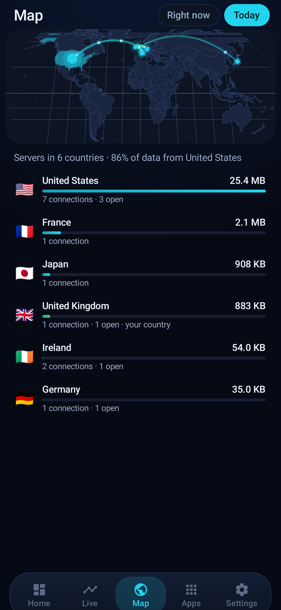
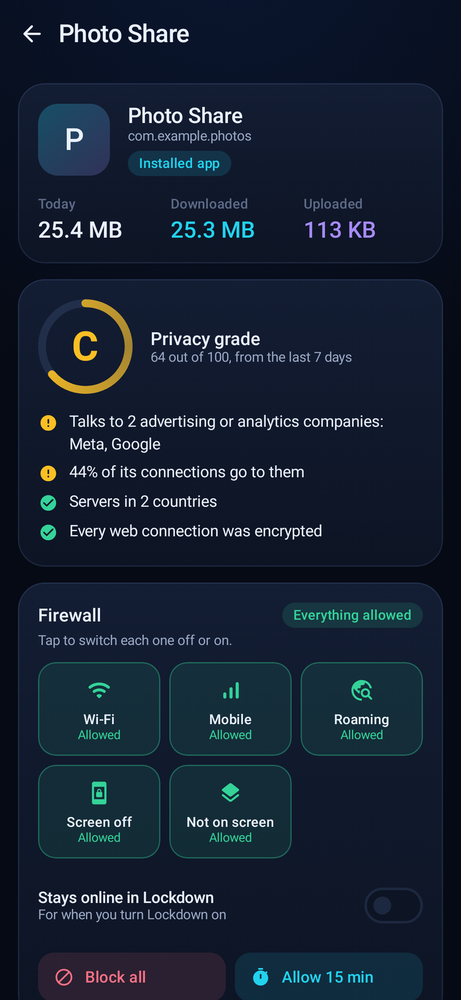
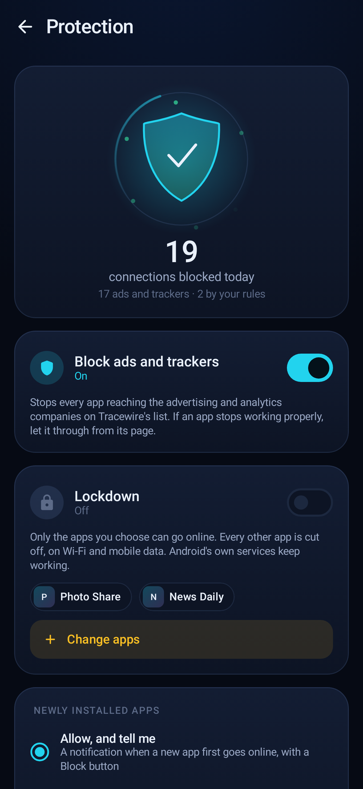
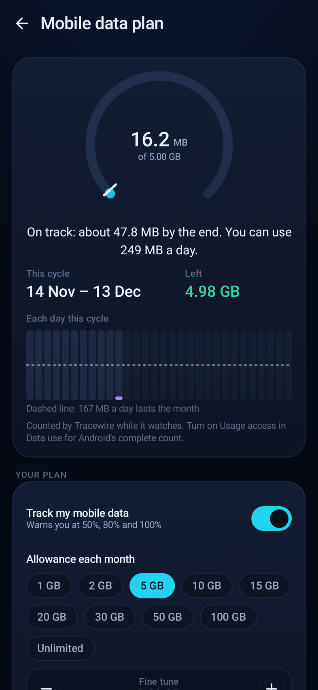
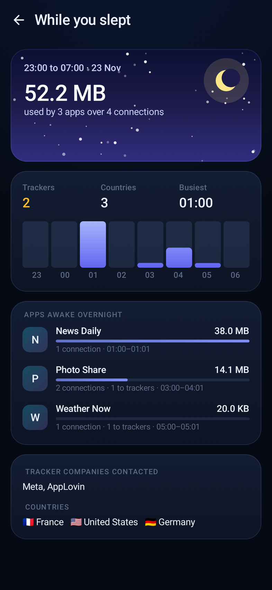
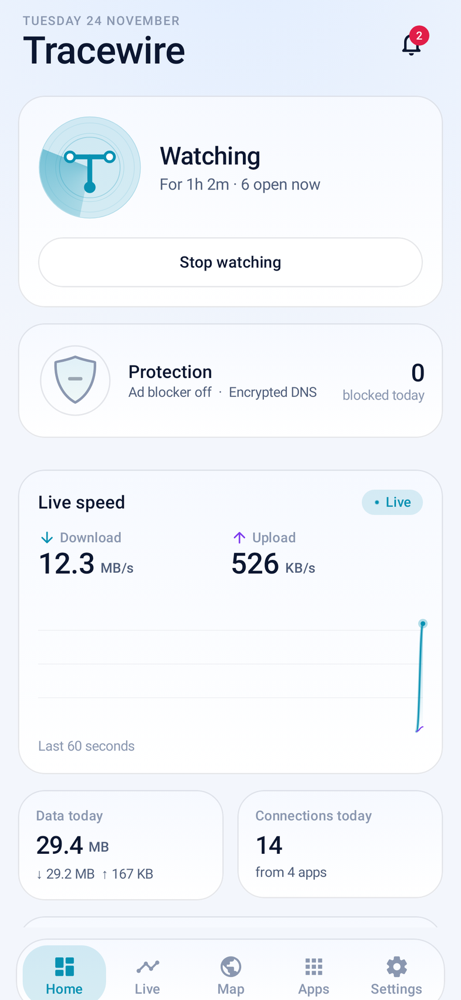

See every connection your phone makes.
Tracewire shows, live, which app is talking to which server, who owns it, where in the world it is and how much data it uses.
Then it does something about it: it blocks ads and trackers, gives every app a firewall, and keeps your look-ups private with encrypted DNS.
Watching someone else's phone traffic is covered by the law. What the law says
- Version 1.0.1
- Android 10 or later
- 9.2 MB
Free, with nothing to unlock. No adverts, no account with the developer, no tracking, no root. Compare or read the release notes.
Chrome may say the file might be harmful. It shows this for app files that do not come from Google Play. Choose Download anyway.

- No advertsNone in the app and none on this site.
- Stays on your phoneWhat your apps do is never sent to anyone.
- No root neededWorks on any phone with Android 10 or later.
- No accountNothing to sign up for.
A look inside
These are the real screens, drawn from the app's own code with made-up apps and traffic. Swipe or scroll sideways to see them all.









How it works
Tracewire uses Android's VPN feature to sit between your apps and the internet, on the phone itself. Nothing goes to another server.
Tap Start watching
Android asks once whether Tracewire may watch the phone's connections. Allow it, and a key appears in the status bar.
Use your phone as normal
Every connection passes through Tracewire's own engine on the phone. It notes the app, the server and the data, and applies your rules.
Look whenever you like
Open Live to see it happening, the map to see where it goes, or an app to see its grade. Alerts tell you about the things worth knowing.
Everything is in, and all of it is free
The best of the monitors, firewalls and tracker blockers in one app, with nothing held back for a paid tier, because there is no paid tier.
Seeing everything
- Every connection, live
- Which app opened it, the server's name, its address and port, how much went each way and whether it is still open. Search by app, site, company or country.
- Who is behind each server
- The company that owns the server and the network it is on, and whether it is advertising, analytics, social media or simply a delivery network.
- A world map of your data
- See which countries your data travels to, how much each one gets, and which apps send it there.
- Each app laid bare
- A privacy grade from A to F with plain reasons, the sites and companies it reaches, its activity across the day and its data for the week.
Protection
- Block ads and trackers
- One switch stops every app reaching the advertising and analytics companies on the list. If an app misbehaves, let it through on its page.
- A firewall for every app
- Switch off Wi-Fi, mobile data, roaming, screen-off or background use for any app. Block a site for one app or all of them, or whole countries.
- Lockdown
- Only the apps you choose can go online. Everything else is cut off until you turn it off. Android's own services keep working.
- Encrypted DNS
- Website look-ups go encrypted to Quad9, Cloudflare or Mullvad, so your network cannot see or change them. Normal DNS takes over if they cannot be reached.
Your data
- Data plan and forecasts
- Set your allowance and billing day. Tracewire shows where you will be by the end of the month, a daily budget and the day you would run out.
- Alerts that matter
- A new app going online, an app reaching a new country, heavy use in the background, or a jump in data. Each one can be switched off.
- While you slept
- Each morning: which apps woke up overnight, how much they used and who they talked to.
- Android's own records
- With Usage access, every app's mobile and Wi-Fi totals for months back, even from before you installed Tracewire.
Everyday
- Reports and exports
- A PDF privacy report, a CSV list of every connection for Excel, and a packet capture for Wireshark.
- Widgets and a tile
- Two home screen widgets with live speed and what was blocked, and a Quick Settings tile to start or stop.
- App lock
- Optional fingerprint, face or PIN lock, and it can hide Tracewire from the recent apps screen.
- Your look
- Dark or light, following your phone, with an opening animation you can shorten or switch off.
A privacy tool that is private itself
Kept on your phone
Your connection history, rules and reports stay in the app. There is no account and no Tracewire server.
Nothing decrypted
Tracewire never opens secure connections. It reads only what every network can see: which server, how much, and the site's announced name.
No ads, no tracking
There is no advertising, analytics or tracking, in the app or on this site.
Only two things online
Encrypted DNS look-ups to the service you pick, and a monthly check of this site for newer lists, which you can switch off.
Installing and updating
Tracewire is not on Google Play, so your phone asks a couple of extra questions the first time.
Download the app file
Tick the box above, then tap Download on your phone. The file is called Tracewire.apk and is about 9.2 MB. If Chrome says the file might be harmful, choose Download anyway.
Allow the install
Open the file. The first time, Android asks you to allow your browser to install apps. Allow it, go back and tap Install. If Google Play Protect steps in, choose More details, then Install anyway.
Updating later
In Settings, About, Check for app updates opens the release notes page. Install the new file over the old one and your history, rules and settings are kept.
Version 1.0.1, released 24 November 2026. See the release notes, or check your download.
Questions
Is Tracewire really free?
Yes. There is no paid version, no subscription and no adverts, and nothing is locked. Every feature is there from the start.
Does it need root?
No. Tracewire uses Android's own VPN feature to see connections, on any phone with Android 10 or later. It is not a VPN service: nothing is sent to another server, and your internet address stays the same.
Can it read my messages or passwords?
No. Tracewire never decrypts anything. For secure connections it sees which app, which server and how much data, plus the site's name that the app announces when it connects. The contents stay encrypted.
Why does Android show a key icon?
Android shows it for any app that uses the VPN feature. While Tracewire is watching, the key stays in the status bar. It does not mean your traffic is going anywhere else.
Can I use another VPN at the same time?
No. Android lets one VPN-style app run at a time. If you switch another one on, Tracewire stops watching and tells you.
Does it slow the internet down?
Not noticeably. Its own connection engine handled over 270 megabits a second in tests, far faster than mobile data. Blocking ads and trackers often makes pages lighter.
Does it run down the battery?
A little, because it is working whenever you use the internet. When the screen is off it checks less often, and there is nothing to send anywhere.
Where does the country and company information come from?
From lists kept on the phone: an open database of who owns each internet address and where it is registered, and AdGuard's open list of companies behind websites. Tracewire checks this site once a month for newer lists, if you allow it.
What is the packet capture for?
For people who study networks. It records every packet in the standard format that Wireshark opens. Secure contents stay encrypted. Most people never need it.
How do I update Tracewire?
In Settings, About, Check for app updates opens the release notes on this site. Download the new file and install it over the old one. Your history, rules and settings are kept.